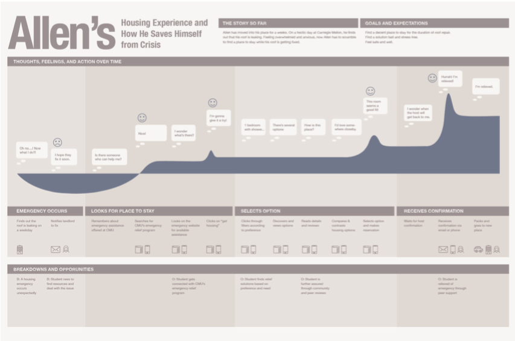
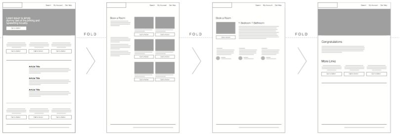
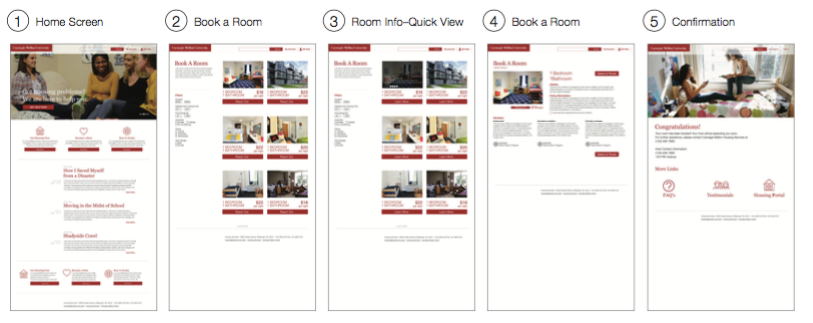

Responsive Website Design for Urgent Campus Housing
By Nila Banerjee & Angel Yu
We were asked to create a responsive website to fulfill a gap in the student experience of arriving at Carnegie Mellon in two weeks. The process went from resarch to hi-fidelity prototypes, including guerrilla research, customer journey maps, problem reframing, and prototyping. The final deliverables included designs for mobile and web browsers.
Guerrilla Research
We noticed that at the current states, the student’s experience of getting to Carnegie Mellon is characterized by a mixture of positive and negative feelings. We identified three areas of notable concern: housing, course registration, and getting around in Pittsburgh. We felt that housing offered a fertile ground for exploration because every student seemed to have a horrible housing story. From here on, we embarked on the arduous process of reframing the problem.
We discovered that a major issue was that many students arrived in Pittsburgh but found themselves without a place to stay due to problems with utilities, leasing, or other housing concerns. Therefore, our solution was to design a responsive website that would allow students and teachers to temporarily host other students for a fee, creating a peer-to-peer economy.
Customer Journey Map
The customer journey map details the experience we wanted to deliver for emergency housing.

Wireframes
Desktop

Mobile
Final Designs
Desktop

Mobile
Currently, the design visions focus on the concept of “emergency relief," with secondary themes of “community” and “fun” hinted at through blog posts on the homepage, UX features such as likes and comments, as well as usage of terms such as “reach out," “adventure," and “disaster." Our focus was on creating designs that stressed the urgency of the issue and seemed like a part of the current Carnegie Mellon website. To push the project further, we would spend more time investigating elements of fun and excitement. This would not only help support reframing the problem statement, but also differentiate the platform from regular booking websites and leverage the value of peer support in emergency situations.